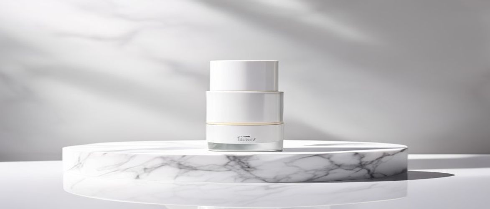

If you're exploring advanced skincare solutions, understanding what makes a product truly effective is crucial, and the question of "is clinical super serum advance" often arises among those seeking transformative results. This potent formula from iS Clinical is not just another serum; it's a cornerstone for many professional skincare routines, designed to address a multitude of skin concerns.
This comprehensive guide will delve into the science behind this acclaimed product, exploring its unique blend of ingredients, optimal usage, and why it consistently garners praise within the dermatology community. You'll gain expert insights to determine if this medical-grade skincare solution is the right addition to your regimen.
The iS Clinical Super Serum Advance+ is a meticulously crafted clinical formula, renowned for its multifaceted approach to skin health and rejuvenation. It stands out in the professional skincare landscape due to its powerful antioxidant properties and ability to improve overall skin texture.
The iS Clinical Super Serum Advance+ is ideal for individuals concerned with aging, hyperpigmentation, uneven skin tone, and those seeking robust antioxidant protection. It is particularly beneficial for mature skin, sun-damaged skin, and those looking to enhance their professional skincare routine.
While potent, its formulation is generally well-tolerated, making it suitable for many skin types, though those with hypersensitive skin should introduce it gradually. It's a cornerstone product for anyone aiming for comprehensive skin rejuvenation and improved skin barrier function.
Understanding the powerful synergy of ingredients within the iS Clinical Super Serum Advance+ is essential to appreciate its efficacy as a medical-grade skincare product. Each component plays a vital role in its ability to deliver profound improvements in skin texture and health.
| Ingredient / Feature | Skin Benefit / Scent Role |
|---|---|
| L-Ascorbic Acid (Vitamin C) 15% | Potent antioxidant, brightens complexion, stimulates collagen synthesis, protects against UV damage. |
| Copper Tripeptide Growth Factor | Boosts collagen and elastin production, promotes wound healing, reduces inflammation, improves skin firmness. |
| Hyaluronic Acid | Deeply hydrates the skin, plumps fine lines, improves skin elasticity, supports the skin barrier. |
| Arbutin & Mushroom Extract | Reduces hyperpigmentation, evens skin tone, provides additional antioxidant protection, pore-minimizing benefits. |
L-Ascorbic Acid, the purest form of Vitamin C, is a powerhouse antioxidant that neutralizes free radicals, which are major contributors to premature skin aging. It is also critical for stimulating collagen production, a protein essential for maintaining skin firmness and elasticity.
Furthermore, Vitamin C plays a significant role in brightening the complexion by inhibiting melanin production, thereby reducing the appearance of dark spots and promoting a more even skin tone. Its ability to protect against photodamage is well-documented in dermatological research.
Studies indicate that L-Ascorbic Acid at a 10-20% concentration, like that found in Super Serum Advance+, offers optimal antioxidant protection and collagen-boosting benefits.
Copper Tripeptide Growth Factor is a naturally occurring peptide complex that has remarkable regenerative properties for the skin. It signals the skin to produce more collagen and elastin, crucial components that provide structural support and resilience.
Beyond its anti-aging benefits, this ingredient is celebrated for its ability to accelerate wound healing and reduce inflammation, making it excellent for skin recovery and maintaining a healthy skin barrier. It actively supports the skin's natural repair mechanisms, leading to smoother, healthier-looking skin.
Incorporating the iS Clinical Super Serum Advance+ into your daily routine can significantly elevate your skin health, but proper application is key to maximizing its benefits. Consistency and correct layering are paramount for achieving optimal results with this potent medical-grade skincare product.
One common mistake is using too much product, which can lead to unnecessary waste without enhancing efficacy. Another error is not allowing sufficient absorption time before applying other products, which can dilute its potency or cause pilling.
Additionally, neglecting daily SPF application after using this serum is a significant oversight, as Vitamin C can make your skin more susceptible to sun damage if not properly protected. Ensure your professional skincare routine includes robust sun protection.
Always perform a patch test on a small area of skin before full facial application, especially if you have hypersensitive skin, to check for any adverse reactions.
When considering whether to invest in the iS Clinical Super Serum Advance+, it's helpful to weigh its distinct advantages against any potential drawbacks. This medical-grade serum has a strong reputation, but understanding both sides helps you make an informed decision for your skin.
Many users have common questions regarding the application, suitability, and unique benefits of this advanced serum. Here are some answers to help clarify your understanding of "is clinical super serum advance" and its role in your skincare regimen.
While potent, iS Clinical Super Serum Advance+ is often tolerated by sensitive skin types, but it's crucial to introduce it gradually. Start by using it every other day, and always perform a patch test first to ensure no adverse reactions occur, especially if you have a history of hypersensitivity.
For best results, it is recommended to use iS Clinical Super Serum Advance+ once daily in the morning, after cleansing and before moisturizing. This allows its powerful antioxidants to provide protection throughout the day against environmental stressors.
The key differentiator for iS Clinical Super Serum Advance+ is its unique blend of 15% L-Ascorbic Acid with Copper Tripeptide Growth Factor and Arbutin. This combination not only provides superior antioxidant protection but also actively promotes collagen synthesis, wound healing, and targets hyperpigmentation more effectively than many standalone Vitamin C serums, offering a truly clinical formula.
Yes, Super Serum Advance+ can generally be incorporated into a routine with other active ingredients, but it's best to consult with a dermatologist or skincare professional. Avoid using it simultaneously with other strong exfoliating acids or retinoids unless advised, to prevent potential irritation and maintain your skin barrier.
After a thorough examination, it's clear that the iS Clinical Super Serum Advance+ lives up to its reputation as a leading medical-grade skincare product. Its expertly formulated blend of L-Ascorbic Acid, Copper Tripeptide Growth Factor, and other beneficial ingredients offers a comprehensive solution for anti-aging, brightening, and overall skin health. For those seeking significant improvements in skin texture, tone, and resilience, the investment in this clinical formula is truly justified.
If you're ready to experience a noticeable transformation in your complexion, consider adding this powerful serum to your skincare regimen today.
Have questions or a comment on the post? Send us a message and we will get back to you soon.